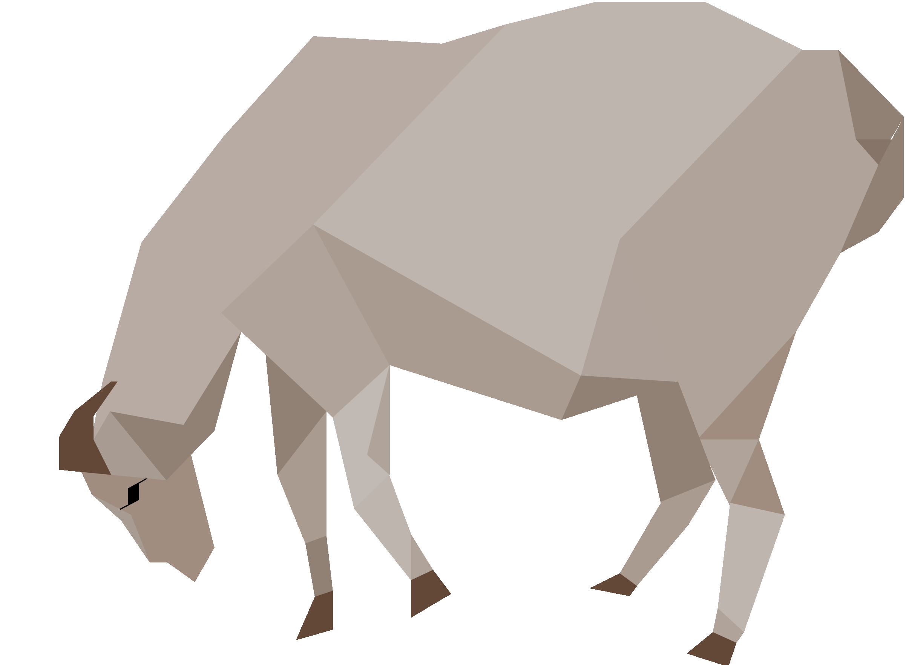
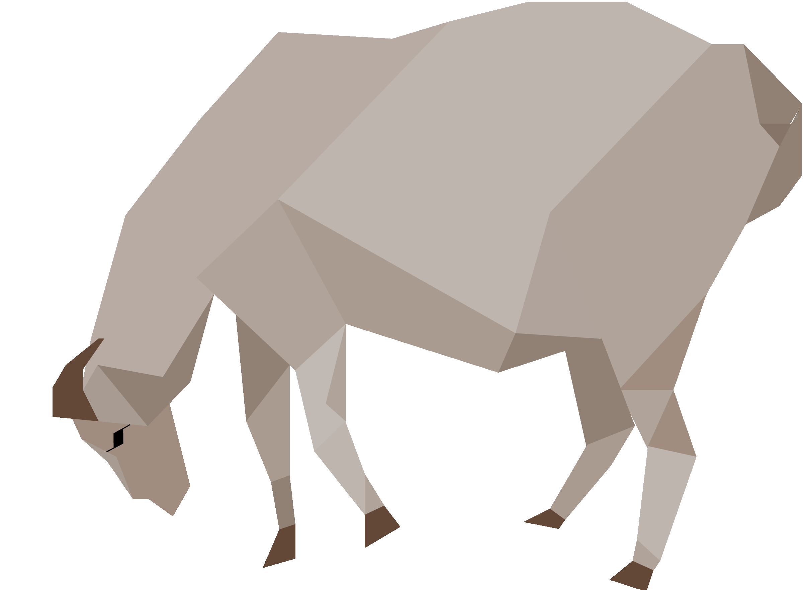

维吾尔族主要聚居在新疆，对他们来说，每年3月20号到22号的诺鲁孜节 是意义和汉族的春节一样的最重要的节日。 诺鲁孜节距今至少已有3千年的历史，内容与汉民族的春节相似。该节日 形成初期，包括维吾尔族在内的突厥部落的先辈过着游牧生活，他们在晚冬 初春把昼夜时差持平之日称之为“日生”、“年头”，并把此日开头的月称 之为“羊羔月”。此时正值冰雪消融、草木返青、大地复苏、牲畜产仔的时 节，这时牧民们—面兴高采烈欢度节日，一面清点安全越冬的牲畜，准备开 始草原放牧。 随着以牧转农、定居、城郭进程的发展，该节日增添了更丰富的内容。 大约在公元前1000年左右，史料上以“九回鹘”记载的西回鹘用塔吉克语称 此节为“诺鲁孜节”。随着时间的推移，该节在保留原始面貌的基础上，增 添了浓郁的“艺术节”色彩。总之，诺鲁孜节在增进西域和中原间的礼尚往 来、加强文化交流，犹其在形成古丝绸之路方面起到了非常重要的作用。 改革开放以后，党的民族政策真正落到实处，掀起了整理、拯救、挖掘、 继承和发展各民族文化遗产、恢复传统节日的热潮，各县市开始举办诺鲁 孜节活动，并用各种形式传到家家户户。